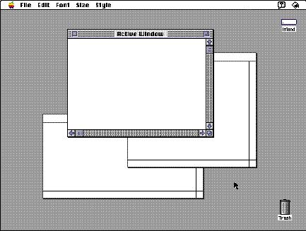
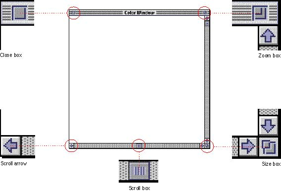
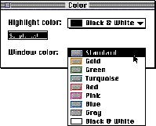

|
Use of Color in WindowsColor distinguishes the active window from other windows and enhances the appearance of user controls on the window frame. On color screens, the scroll bars and the racing stripes in the title bar are gray. The user controls--close box, size box, zoom box, and scroll box--are colored to make them more apparent. The borders of inactive windows are gray and appear to recede into the background so that the active window's black frame emphasizes its position in front of the other windows. Figure 5-3 shows the appearance of windows on a color screen.Figure 5-3 Windows on a color screen  The standard window definition functions display color windows and dialog boxes. The control definition functions for scroll bars, scroll arrows, scroll box, close box, size box, and zoom box have been updated to display these controls in color. If you use the standard window definition functions and standard control definition functions, your application's windows will match the appearance of Macintosh system windows. If you create your own windows, be compatible with the system software appearance by using the standard window color table. Figure 5-4 shows the components of a standard window in color. Figure 5-4 Standard window components in color  Be aware that users can change the color used in window frames and dialog box frames by using the Color control panel. If you use the standard window color table, you can be sure that any colors you use are consistent with any color that the user can choose from the Color control panel. You can use the Palette Manager to associate a color palette with a window definition. For more information, see the discussion of the Palette Manager in Inside Macintosh. Figure 5-5 shows the Color control panel and the colors that the user can choose to be used in windows and dialog boxes. Figure 5-5 Colors that the user can choose for windows  |